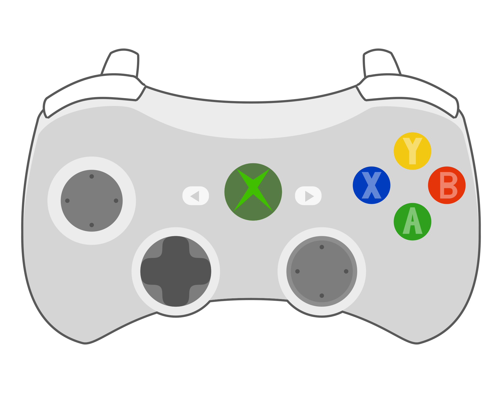
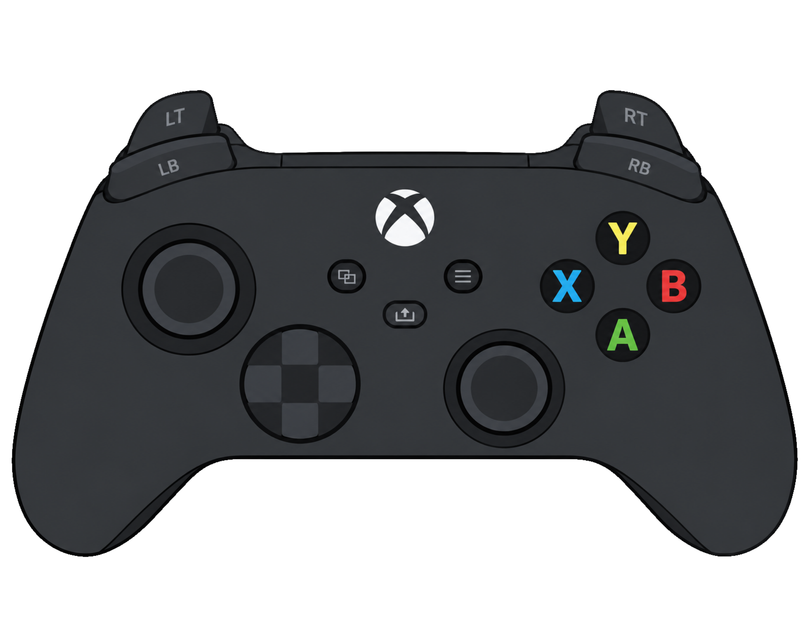
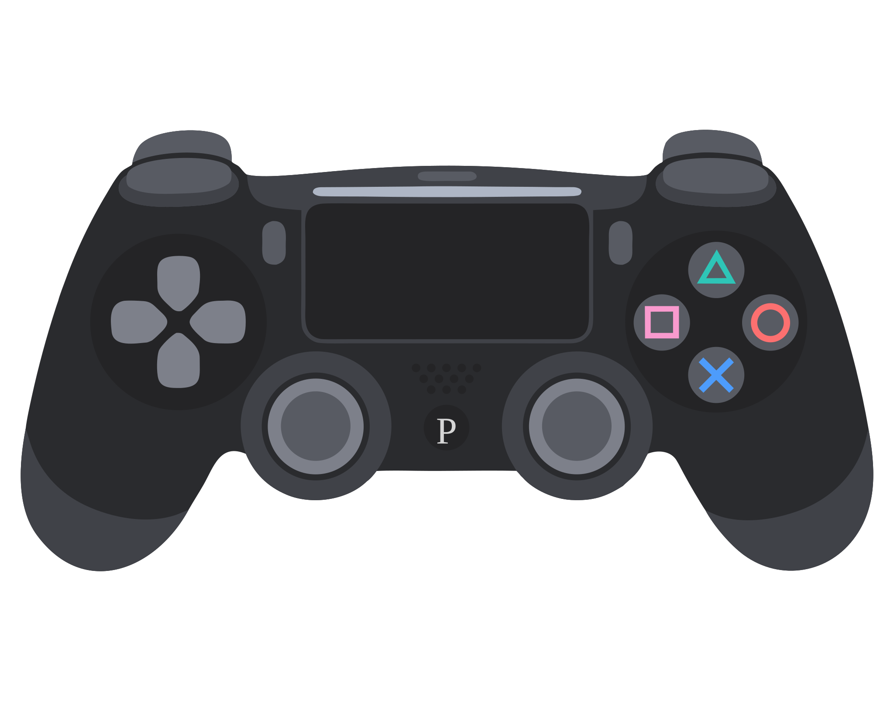
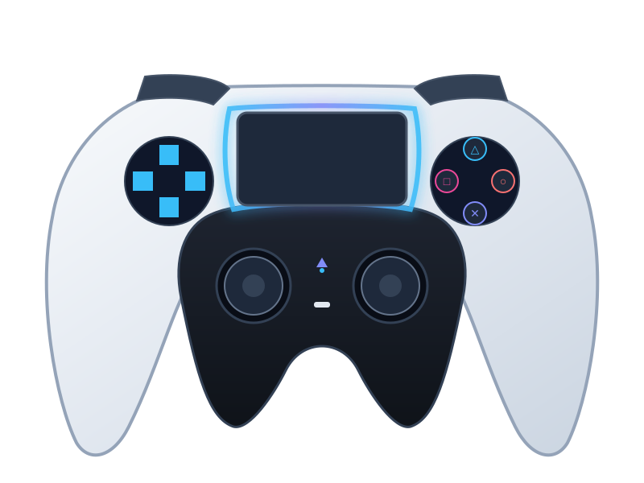
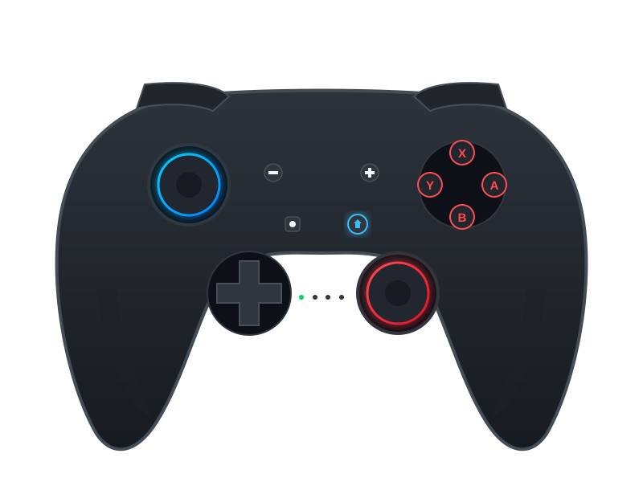
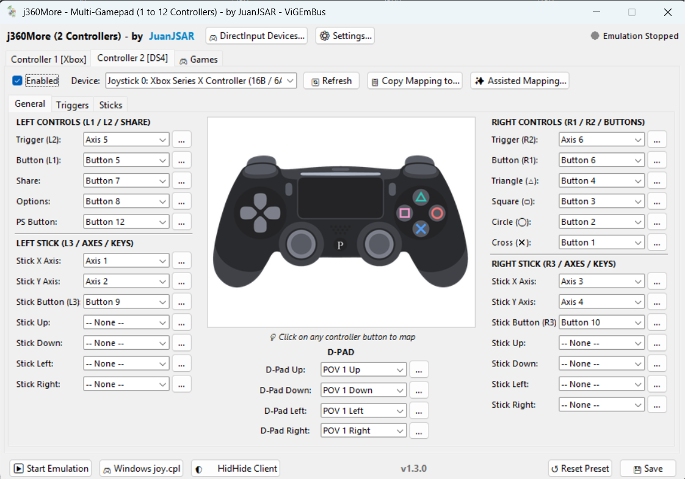
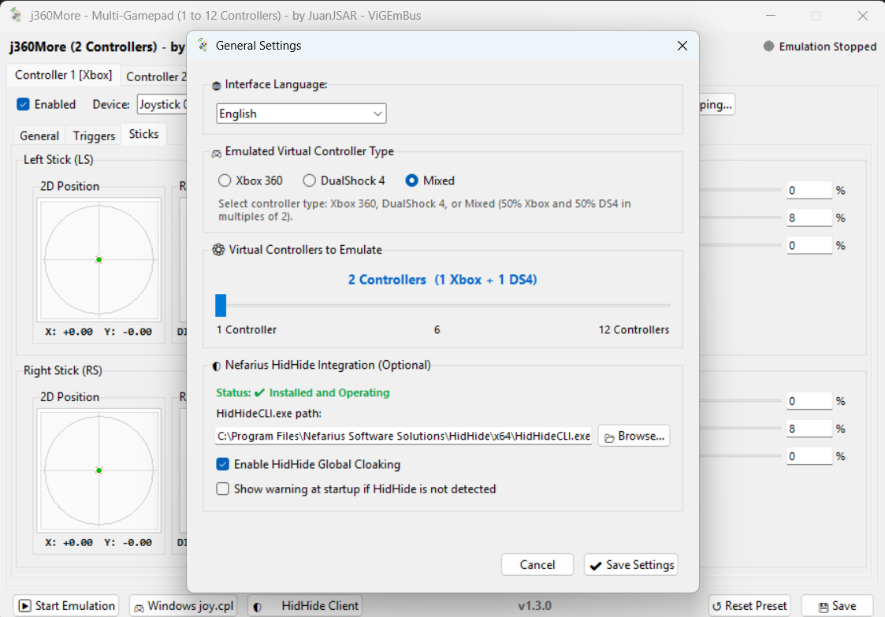

Convierte cualquier control genérico USB, mando de PlayStation, Nintendo Switch, palanca arcade o múltiples teclados independientes en mandos oficiales de Xbox 360, DualShock 4, DualSense o Switch 2 Pro con precisión milimétrica y compatibilidad total.
Diseñado para jugadores de PC, emuladores y salones arcade que necesitan conectar múltiples mandos sin conflictos de detección.
Rompe el límite clásico de 4 mandos. j360More permite crear de 1 hasta 12 slots independientes de Xbox 360, ideal para títulos multijugador masivos como Party Animals, Gang Beasts, emuladores y arcades.
Hilo de ejecución dedicado que muestrea los eventos de palancas, botones y gatillos a 120 ciclos por segundo con respuesta inmediata sin input lag perceptible.
Ajuste fino de zonas muertas (deadzone), anti-deadzone para sticks con deriva o desgaste, curvas de sensibilidad dinámica y reversión de ejes X/Y para sticks y gatillos.
Oculta periféricos DirectInput físicos a nivel de driver para que los juegos solo detecten el mando emulado, eliminando para siempre el "doble control" en FIFA, Rocket League y emuladores.
Reconexión automática de gamepads en caliente mediante SDL2. Si desconectas o reconectas un mando en mitad de la partida, j360More lo recupera al instante sin reiniciar.
Todas tus asignaciones de botones, dispositivos y calibraciones se guardan de forma limpia en config_mapping.json para transferir o respaldar en cualquier equipo.
Conecta 2 o más teclados físicos (USB, Bluetooth o laptop) y asígnalos a mandos virtuales de Xbox separados. Desarrollado sobre Windows Raw Input para garantizar cero interferencias cruzadas (Zero Cross-Talk).
Pestaña dedicada para lanzar juegos multijugador con inyección automática de variables de entorno (FNA_GAMEPAD_NUM_GAMEPADS, etc.) escaladas en tiempo real para soportar hasta 12 mandos.
j360More te permite elegir qué tipo de mando crear en tu sistema mediante los drivers VIIPER y ViGEmBus: Xbox 360, Xbox One (GIP), DualShock 4, DualSense (PS5), Nintendo Switch 2 Pro o modo Mixto simultáneo.

El estándar principal en PC. Compatibilidad asegurada con títulos de Steam, Xbox Game Pass, Epic Games Store y emuladores modernos.

Emulado mediante el protocolo oficial Microsoft GIP vía VIIPER. Windows PnP lo reconoce nativamente como mando Xbox One con soporte total XInput.

Emulación de mandos PlayStation 4, ideal para juegos con soporte nativo de botones de PlayStation y emuladores como RPCS3, PCSX2 y DuckStation.

Emulación de mandos DualSense de PlayStation 5 mediante el driver VIIPER, con mapeo completo de botones y compatibilidad de última generación.

Soporte para el nuevo mando Switch 2 Pro (ns2pro) con disposición de botones de Nintendo, calibración precisa de 12 bits y centrado neutro.
Explora la interfaz moderna, limpia y potente diseñada para un control milimétrico y configuración sin esfuerzo.
Configuración y emulación de mandos Xbox 360 para hasta 12 jugadores independientes.

Configuración y emulación de mandos DualShock 4, disponible en modo individual o en modo Mixto.

Ajuste de zona muerta para corregir deriva (drift), curvas de sensibilidad e inversión de ejes.

Selección del motor (VIIPER / ViGEmBus), tipo de mando (Xbox 360, DualShock 4, DualSense, Switch 2 Pro o Mixto), cantidad de mandos e idioma.
Para lograr una emulación 100% nativa a nivel de kernel en Windows sin requerir programas pesados, j360More se apoya en los controladores de referencia de la comunidad.
Potente servidor de emulación USB sobre red local (USB/IP) que permite crear mandos virtuales de última generación directamente en Windows y Linux (Beta). El ejecutable ya viene incluido en j360More.
Es el nuevo motor de emulación predeterminado y multiplataforma. Permite generar mandos de Xbox 360, DualShock 4, DualSense (PS5) y Nintendo Switch 2 Pro. En Windows requiere el controlador complementario usbip-win2.
El Virtual Gamepad Emulation Bus es un driver de nivel de sistema (kernel-mode) clásico para Windows que genera mandos virtuales de Xbox 360 y DualShock 4.
Es el motor alternativo tradicional para usuarios de Windows con ViGEmBus previamente instalado. Permite crear mandos virtuales de Xbox 360 y DualShock 4 con máxima compatibilidad en Windows 10 y 11.
Un controlador de filtro de dispositivos HID que permite ocultar de forma selectiva periféricos de juego reales a todas las aplicaciones del sistema, excepto a los procesos que estén expresamente autorizados (como j360More).
Resuelve el clásico y molesto problema del "doble mando" (double-input). Cuando conectas un control genérico o de PS4/PS5, muchos juegos detectan al mismo tiempo el mando físico y el mando virtual emulado, duplicando las pulsaciones. HidHide oculta el mando físico a los juegos dejando visible solo el mando Xbox 360 emulado.
| Componente | Requisito Mínimo | Recomendado |
|---|---|---|
| Sistema Operativo | Windows 10 / 11 (64-bit) | Windows 11 / Linux (Beta) |
| Driver de Emulación | VIIPER (con usbip-win2) o ViGEmBus | VIIPER (Multiplataforma: X360, DS4, PS5, Switch 2) |
| Driver HidHide | Opcional (No requerido para arrancar) | HidHide v1.2+ (Para evitar doble control) |
| Periféricos de Entrada | Cualquier Gamepad USB / Bluetooth o Multi-Teclado Raw Input | Múltiples teclados independientes, DirectInput o mandos estándar |
| Formato del Programa | Ejecutable standalone sin dependencias | Modo portátil directo con bin/viiper.exe |
Sigue estos sencillos pasos para tener tus mandos listos.
Instala el driver usbip-win2 para el nuevo motor VIIPER por defecto (o ViGEmBus para el motor clásico). Solo debes hacerlo una vez.
Abre el ejecutable j360More.exe. El programa detectará tus drivers y mandos conectados automáticamente.
En las pestañas "Mando 1" al "Mando 12", selecciona qué dispositivo físico controlará cada ranura virtual de Xbox 360.
Pulsa "Iniciar Emulación". Windows creará inmediatamente los mandos virtuales y tus juegos responderán a la perfección.
Puedes clonar el repositorio y ejecutar el compilador oficial de un solo clic: